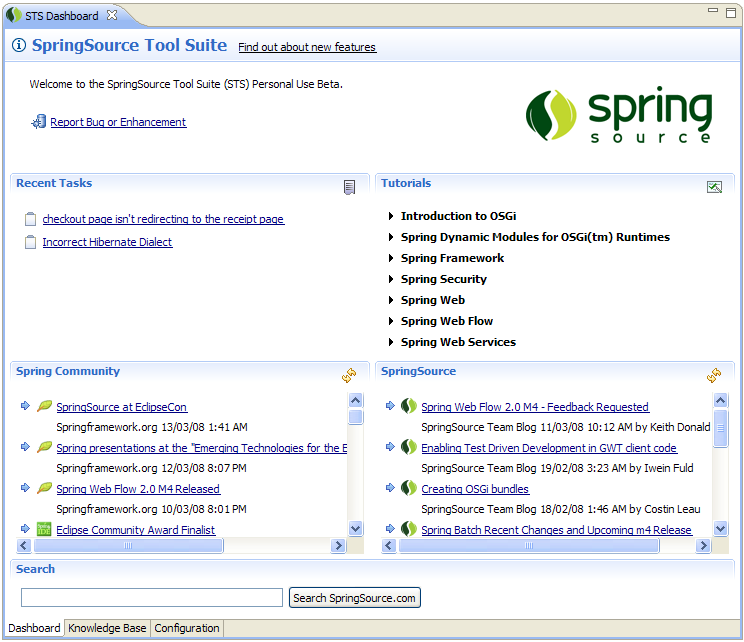
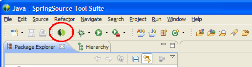
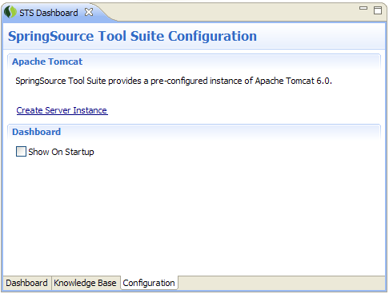

The STS Dashboard provides SpringSource-related content and convenient access to a number of STS features.

The Dashboard can be opened at any time by clicking the "SpringSource" button in the toolbar.

If you have built up task history the dashboard will display the most recent tasks that you have been working on. You can click on a link to open a task editor. When you don't have any task history, the dashboard will link you to the Task List view so that you can start working with tasks.
The SpringSource Tool Suite is rich in tutorial content which covers a variety of topics about the Spring Framework and related technologies. The dashboard provides easy access to all tutorials.
Keep up to date with the latest SpringSource and Spring Community related news. Click the links to open an article in your browser. Unread articles are labeled with an incoming arrow.
You can select the configuration tab at the bottom of the dashboard to access the Knowledge Base functionality or configuration features. On the configuration tab, you can automatically configure a new Apache Tomcat instance.
